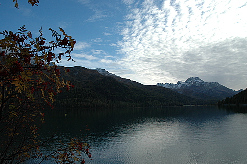

소리와 풍경, 그리고 불멸의 순간
소크라테스와 플라타너스
니체는 자신의 “영감” 혹은 “경험”과 관련하여 “1881년 8월 초 실스 마리아에서, 해발 6천 피트 그리고 모든 인간적인 것들보다 훨씬 더 높은 곳!”(KSA , 494)이라는 메모를 남겼다. 그리고 8월 14일 페터 가스트에게 “나의 지평에서 사상이 떠올랐다”는 관련내용의 편지를 썼다. 이후 육칠 년 뒤 «이 사람을 보라»(1888년)에서 1881년 여름날과 결부시켜 차라투스트라의 형성사를 소개한다. 이 자료들을 종합하여 관련일지와 발언을 정리하면 다음과 같다:
1881년 오뉴월
“취향의 급격한 변화 . . . 특히 음악에서의 결정적 변화”
1881년 8월 초
“1881년 8월 초 실스 마리아에서, 해발 6천 피트 그리고 모든 인간적인 것들보다 훨씬 더 높은 곳!”
“나의 지평에서 사상이 떠올랐다”
“영원회귀 사상은 . . . 1881년 8월에 속한다 . . . 그때 그 사상이 내게로 왔다”
1881년 8월 14일
페터 가스트에게 편지
니체는 1881년 8월 초의 경험이 있기 두 달 전에 “취향의 급격한 변화, 가장 깊은 곳에서의, 다른 무엇보다도 음악에서의 결정적인 변화”를 겪었다. 그의 말을 따라가면, 이 변화는 영원회귀 사상의 징조이자 예비조건이었다. 이를 두고 니체 특유의 과장성 발언에 불과하다고 간주하고 만다면, 니체를 이해하기 위한 시도 자체를 포기하는 것이나 다름없다. 혹시 니체는 정말 여타 사람들과는 차원이 다른 경험을 했고, 그저 그 경험에 관하여 최선을 다하여 이야기할 따름이 아닐까? 때마침 그는 언어적 천재성이 있어 그의 빛나는 경험에 적절한 옷을 입힐 수 있었던 것 뿐이고. 1881년 오뉴월에 경험한 음악적 변화와 관련하여, “음악이라는 불사조가 . . . 더욱 가볍고 더욱 빛나는 깃털로 우리 곁을 스쳐 비상하였다”고 했던 발언은 그의 진정한 경험에다 언어적 천재성이 결합한 결과물이 아니겠는가?
소크라테스처럼 무성한 플라타너스, 향기로운 꽃, 차가운 샘물, 매미 소리, 선선한 바람결 등에 관심을 두지 않고 오직 도시에 있는 사람들에게만 관심을 두는 자라면, 니체의 빛나는 표현들을 한낱 수사로 여길 만하다. 이는 다름아닌 학자들의 전형적인 습성이자 체질과도 같다. “나는 배움을 좋아한다네. 풍경(chorion)이나 나무는 나를 가르치려는 바가 없지만, 도시에 있는 사람들은 나를 가르치려는 바가 있어.”(<파이드로스> 230d) — 이 말은 소크라테스의 말이자 대다수 학자들의 말일 게다. 과연 니체는 소크라테스를 “학자들의 비조”라고 칭한 바 있다.
사실 <파이드로스>에 등장하는 소크라테스는 플라톤의 여타 대화편에서와는 사뭇 다른 면모를 선보이고 있다. 이를테면 아테네 교외로 빠져나가 냇물에 발을 적시며 일리소스 천 상류로 거슬러 간다거나, 커다란 플라타너스가 서 있는 장소를 두고 연방 아름답다고 경탄한다거나, 상당히 고취된 채 첫번째 연설을 하면서 “신성한 파토스가 나를 엄습한 듯하지 않나? . . . 이 장소는 신성한가 보다. 그러니 내가 연설하다가 자꾸 님프들에게 홀려도 놀라지 말게”(238cd)라고 말한다거나, 신화적 요소를 빌어 이데아를 보았던 휘황한 광경을 묘사한다거나 하는 등, 파격적인 모습으로 등장한다. 평소의 소크라테스라면, 마치 예리한 단도를 잘 쓰는 칼잡이처럼, 일체의 군더더기를 제거하고 짤막짤막한 대화를 통한 논쟁을 즐겼을 일이지만 <파이드로스>에서는 초장부터 그렇지 않은 것이다.
그렇다면 소크라테스는 커다란 플라타너스와 차가운 샘물과 매미들의 합창에 홀렸던 것일까? 내가 보기에는 아니다. 그는 소리와 풍경과 감정에 도취되는 여타의 형식들을 좋아하지 않으며, 그가 도취된 모습으로 첫번째 연설을 하는 것도 실은 파이드로스와 그의 선생 뤼시아스의 도취적 모습을 동일하게 취하여 연설 시범을 보여준 것이라고 할 수 있다. 즉 그는 뤼시아스의 감정 고취, 연설 형식과 논리를 고스란히 취하여 뤼시아스의 귀결을 파괴하는 시범을 파이드로스 앞에서 보여준 것이다. 이것은 소크라테스가 평소에 다른 여타 소피스트들과 논쟁하는 과정에서 보여준 본질적인 모습 그대로이다. 말하자면, 평소에는 소피스트의 논변을 재꺽재꺽 따라가 그 논변의 모순을 입증함으로써 무너뜨렸다면, 이번에는 소피스트의 연설 시범의 형식과 논리를 그대로 따라가 (심지어는 도취적인 모습까지 그대로 따라가) 그것의 귀결, 즉 신성모독에 이르는 귀결을 보여줌으로써 무너뜨리는 방식을 취한 것이다. <파이드로스>에서는 단도가 아니라 장검을 썼다고나 할까.
“거인들의 전쟁”
소크라테스가 소리와 풍경, 그리고 신화를 좋아하지 않는 단적인 예는 «국가» 제3권에서 확인할 수 있다. 그는 시인이 직접 발언을 하지 않고 신화속 인물을 재현하여 이야기하는 것(그는 이것을 “미메시스”라 부른다)을 좋아하지 않았으며, 운율이 있는 시를 좋아하지 않았다. «국가» 제3권에서 소크라테스는 «일리아스» 서두 부분과 관련하여 미메시스의 요소가 없는 서사시의 경우를 친절하게 예시하고 있다. 먼저, 소크라테스가 검토 대상으로 삼았던 «일리아스» 서두 부분을 읽어보자.
그가 이렇게 말하니, 노인은 두려워 그 이야기를 따랐노라.
자리를 물고 웅혼하게 포효하는 바닷가 사장따라 묵묵히 걷다보니,
이윽고 한참을 아득허니 떨어지고, 그 노인은 기도하였노라.
통치자 아폴론께, 아리따운 머리결의 레토께서 낳으신 분께:
“들으소서 제 말을, 은빛 활 지니신 분이시어, 크뤼세와 성스러운
킬라를 돌보셨으며, 테네도스를 위력 있게 다스리시는 분이시여,
스뮌테우스시여, 당신께 흡족한 신전을 건립하여 바친 적 있다면,
혹은 당신께 제가 황소들이며 염소들의 살진 허벅다리들을
태워올려 바친 적 있다면, 이 나의 소원을 이루어 주시옵소서.
부디 다나오스 인들이 내 눈물값을 치르기를, 당신 화살로 하여!”
— «일리아스» 1.33-42 (필자 역)
위 서사시 대목에서 호메로스가 등장인물 크뤼세스가 되어 말하지 않고 여전히 호메로스로서 말하는 경우, 즉 미메시스는 없고 깔끔하게 시인 자신의 이야기만 있는 경우에 서사시가 어떤 식으로 쓰여져야 하는가? 소크라테스는 이 물음에 대한 답을 이렇게 제시한다.
노인은 이 말을 듣자 겁이 나서 잠자코 떠나갔다. 그러나 군영에서 멀어졌을 때, 노인은 아폴론 신께 많은 기도를 했는데, 그는 이 신의 여러 별명을 부르면서, 자기가 한 신전들의 건립과 제물을 바친 일을 상기시키며, 그런 것들을 통해서 일찍이 그 신의 마음에 드는 것을 바친 것이 있었다면, 그 보답을 해 줄 것을 요구했다. 바로 그 보답으로 그 신의 화살들로써 자기의 눈물에 대한 대가를 아카이아 인들이 치르게 해 달라고 그는 기원했다.
— «국가» 394a(박종현 역)
일리아스의 서곡은 무사 여신들에게 호소하는 시가를 뒤이어 곧바로 예언자 크뤼세스가 전리품으로 빼앗긴 딸을 되찾으려고 아카이아인들의 진영으로 가서 그들의 수장 아가멤논과 벌이는 담판을 그리고 있다. 그러나 아가멤논은 딸을 방면하기는커녕 협박까지 하면서 크뤼세스를 내쫓는다. 크뤼세스는 그 험악한 기세에 짓눌려 앞서 인용한 대로 아폴론 신에게 기원을 한다. 그리고 이 기원은 트로이아를 아홉해 째 공략하고 있던 아카이아인들을 엄습하는 치명적인 역병으로 화한다. 서곡 바로 다음에 자리잡은 이 짧은 기원이 결국 여러 서사시 영웅들의 긴장 관계를 다시 조율하는 계기가 된 만큼, 이 대목은 그에 걸맞는 무게와 호흡, 긴박감과 비장감이 울려나도록 낭송되었어야 할 일이다. 기본적으로는 서사시의 육운보 운율 자체가 그러한 장엄과 웅장을 담아냈을 것이지만, 그에 더하여 낭송가인의 몸짓, 목소리의 음색, 소리의 고저와 강약 등 예민한 감각을 총 동원하여 이 대목의 긴장과 고요, 쓸쓸함과 절박함, 강렬함과 분노를 역동적으로 표출했을 것이다. 그리하여 서사시는 낭송되던 장소 그리고 낭송을 듣는 청중과 불가분의 조율 관계를 형성하면서 때로는 고요하게 때로는 격렬하게 청중의 마음을 사로잡았을 것이다.
그리스 전역을 유랑하는 낭송가인들이 아카이아인들의 찬란한 과거를 향수로 간직하고 있는 후예들을 모아놓고 어느 한 장소, 어느 한 시점에서 낭송했던 서사시의 현장성은 그러나 플라톤 당시만 해도 사라지고 말았다. 오직 그러한 현장에서 시작되었으며 그러한 현장과 더불어 성장하였으며 그러한 현장 속에서 완성을 이루었던 서사시는 기원전 4세기의 그리스에서는 서사시 낭송경연이나 교육현장에서 접할 수 있는 것이었다. 정착되고 고착된 축제의 한 형식으로만 편입된 서사시, 교육현장에 소속된 서사시는 이미 그 시작점에서 상당히 멀리 떨어져 나간 것이다. 우선, 그것이 수많은 청중을 앞에 두고 벌이는 경연의 형태를 취함으로써 현장의 마력을 상당 부분 털어낼 수밖에 없다. 또한 교육현장에서의 서사시는 가장 그 마력과 거리가 멀다. 그럼에도 불구하고 플라톤의 표현대로 “시적인 사람이 못 되는” 소크라테스도 서사시의 낭송, 음악성을 동반한 언어의 마력에 대해서만큼은 인정을 한다. 비록 서사시가 현장성에서는 멀어졌다 하더라도 그것이 가진 위력과 교육효과를 결코 과소평가할 수 없었던 플라톤은 그것의 마력을 꺾기 위한 길로 단호하게 접어든 것이다.
바로 이 전략의 지점에서, «국가»에서의 소크라테스는 서사시의 현장성을 철저하게 배격하고, 또 마지막 남은 현장성의 흔적인 운율마저 벗겨내어, 그 운문을 산문화시킨다. 그래서 시의 음악성은 완전히 사라진다. 이제 영웅들의 웅장한 세계는 음악적 요소라는 면에서 무미한 세계로 전락한다. 그리고 이 산문화된 시에서는 “웅혼하게 포효하는 바닷가 사장따라 묵묵히 걷”는 예언자의 모습이 삭제된다. 아울러 “크뤼세와 성스러운/ 킬라를 돌보셨으며, 테네도스를 위력있게 다스리시는 분”, “은빛 활 지니신 분” 등 아폴론 신의 행적과 관련한 신화성 혹은 역사성이 제거되고, “여러 별명”이라고 일축된다. 시를 추방하고 시를 다시 귀환시키는 이러한 변혁의 과정에서 플라톤의 소크라테스는 무엇보다도 음악성, 미메시스, 신화성, 풍경을 제거한다.
시와 철학의 구원(舊怨) 관계, “거인들의 전쟁”은 이처럼 소리, 풍경, 신화와 밀접한 관련이 있다. 철학은 그것들을 제거하고자 하며 시는 그것들을 사용하고자 한다. 인류의 정신사에서 소리, 풍경, 신화를 사용하려는 극점과 그것들을 제거하려는 극점 사이에는 다양한 스펙트럼이 존재할 것이다. 그렇다면 니체도 이 거인들의 전쟁에 가담한 것인가?
니체의 거리감
니체는 1881년 여름날을 전후하여 “음악이라는 불사조”가 더욱 가볍게 비상하는 것을 발견하였으며, 사상이 그에게로 오는 것을 경험했다. 그는 그 경험의 상태, “적연부동한 상태”가 행여 흐트러질까봐 거기에 관해 말하는 것조차 꺼렸다. 그는 눈이 벌겋게 충혈될 정도로 환호의 눈물을 흘렸으며, 피라미드처럼 솟은 바윗덩이와 실바플라나 호숫가의 풍경을 보존하고 싶어했다. 플라톤의 철학과는 정반대로 소리와 풍경에 절친했던 것이다. 그는 페터 가스트에게 보낸 1881년 8월 14일자 편지에서 그 해에 보상으로 얻은 것이 있다면, 그것은 바로 “음악과 풍경”이라고까지 했다. 그렇다고 하여 그가 거인들의 전쟁에 가담한 것은 아니다. 그는 시인들조차도 불신한다. 시인은 거짓말을 많이 한다는 것이다. 이러한 입장은 이상의 나라에서 시인을 추방하고자 했던 플라톤과 마찬가지 입장이라고 할 수 있다. 그러나 니체는 플라톤과 달리 결코 소리와 풍경을 떠나지 않는다. 그러면서도 니체에게서의 소리와 풍경은 시인에게서의 소리와 풍경이 확실히 아니다. 소리와 풍경을 여실히 대하는 니체의 태도는, 내 생각에는, 선불교나 신비주의의 계통에 속하는 것이다. 긴 분량이지만 니체의 8월 14일자 편지를 읽어보자:
그래, 다정하고 훌륭한 벗! 팔월의 태양이 우리 위에 있고, 하여 세월은 흐르고, 산이며 숲이며 더욱 고요하고 적요해진다. 나의 지평에서 사상이 떠올랐다. 그와 같은 것을 나는 여태 본 적이 없다, — 나는 그것에 관하여 그 무엇도 알리지 않은 채, 나 스스로를 적연부동한 가운데 보존하고 싶다. 어쩌면 나는 아직 몇 년은 살 것 같구나! 아아, 벗이여, 더러는 내가 정말 최고로 위험한 삶을 살겠다는 예감이 머리를 스치곤 한다, 나는 부숴질 수 있는 기계에 해당하니까! 내 느낌의 강도로 말미암아 나는 떨게 되고 또 웃게 된다, — 이미 나는 몇 번이나 방을 나서기 못했다, 내 눈이 충혈되었다는 우스운 이유에서 — 무엇 때문일까? 매번 그 전날 나는 산책길에 심하게 울었다, 그러니까 감상적인 눈물이 아니라 환희의 눈물을; 그때 나는 노래를 부르고 뭐라뭐라 말했다, 내가 다른 모든 사람들보다 앞서 가진 새로운 시선으로 가득한 채로.
결국 — 내가 나 자신으로부터 힘을 얻지 못하기라도 한다면, 내가 외부의 갈채, 격려, 위로를 기대할 수밖에 없기라도 한다면, 나는 어디에 있는 것이겠는가! 나는 무엇이겠는가! 참으로 내가 힘을 북돋는 찬성, 동감을 표하는 악수를 청량제 중의 청량제로 받아들였다고 할 만한 순간들, 내 삶의 전반적인 시기들(가령 1878년)이 있었다 — 그런데 바로 그때 모든 이들이 나를 곤경에 빠뜨렸다, 나는 그들을 신뢰할 수 있다고 믿었고 그들은 내게 저 호의를 베풀 만한 자들이었는데도 말이다. 이제 나는 더 이상 기대하지 않는다. 가령 내가 이즈음 받는 편지들을 생각할 때면 침울하다싶을 만큼 아연한 느낌이다, — 모든 것이 이렇듯 무의미하며, 어느 누구도 나를 통해 체험을 한 바 없으며, 어느 누구도 나에 대하여 사상을 펼치지 못했다 — 사람들이 내게 말하는 바는 존중하는 것이요 친절한 것이지만, 아득하고 아득하고 아득할 뿐. 우리의 친애하는 야콥 부르크하르트 역시 이렇듯 움츠려든 소심한 편지쪽지를 썼더구나.
그와 반면에, 내가 보상으로 받아들이는 것은, 이번 해가, 내게 속한 것이요 내면적으로 내게 가까운 것 두 가지를 내게 보여주었다는 점이다: 그것은 자네의 음악과 다음의 풍경이다: 그것은 스위스도 아니며, 레코아로도 아니며, 뭔가 전혀 다른 것, 여하튼 뭔가 훨씬 더 남방적인 것이다 — 뭔가 유사한 것(가령 와하카)을 찾아내려면 고요한 대양을 면한 멕시코 고원으로 갈 수밖에 없을 성싶다. 그리고 거기에서 열대 식생과 함께 함은 당연하다. 그런데 이제 나는 이 실스 마리아를 나를 위해 보존하는 방안을 찾고 싶다. 바로 이같은 것을 자네의 음악에서도 느끼지만, 그것을 위해 어찌해야 할 지는 모르겠구나! [이하 생략]
— 페터 가스트에게 보낸 편지, 1881.8.14
이 편지는 1881년 8월의 니체의 경험과 관련하여 가장 중요한 문헌에 속한다. 그런 만큼 학자들이 이 편지를 다루는 방식에서 우리는 많은 것을 엿볼 수 있다. 특별히 전기작가라면 이 편지를 절대로 피해갈 수 없기에 어떻게든 이 편지를 다루는 방식을 드러냄과 동시에 십중팔구 자신의 한계도 드러낼 수밖에 없다. 대표적으로 홀링데일과 자프란스키의 니체 전기를 살펴보자:
일찍이 본 적 없는 사상이 나의 지평에서 떠올랐네 … 나는 확실히 몇 년은 더 살아야만 할 걸세! … 이 강렬한 느낌은 나를 떨게 만들고, 또 웃게도 만드네. 나는 두세 차례나 눈에서 불꽃이 튄다는 웃기는 이유로 방을 떠나지 못했네. … 그 전날, 산책할 때마다 너무나 많은 눈물이 솟구쳤다네. 그건 슬퍼서 흘린 눈물이 아니라 환희의 눈물이었지. 나는 새로운 전망으로 가득 차 울면서 노래를 불렀고, 아무 말이나 지껄였지. … 내가 나 자신으로부터 힘을 끌어낼 수 없다면, 그래서 다른 사람들의 박수갈채와 용기와 위로를 기다려야만 한다면, 나는 도대체 어디에 있는 것이며 또 무엇이란 말인가? 분명 내 삶에도 힘을 실어 주는 굳센 말과 동의를 표하는 박수가 청량제 중의 청량제로 작용했을 법한 순간들이 있었네(이를테면 1878년). 그런데 바로 그 순간 모두가 나를 갑자기 떠나갔지. … 이제 나는 더는 그것들을 바라지 않네. 그리고 최근에 받은 편지들을 생각할 때면 어떤 당혹스러운 놀라움을 느낀다네. 그것은 모두 너무나 무의미하네. … 사람들이 내게 하는 말이 사려 깊고 호의로 충만해 있다 해도 아득하고 아득하고 아득할 뿐.
— 홀링데일, 김기복·이원진, «니체, 그의 삶과 철학» 208면(생략부호는 원저자)
내 마음의 지평선에서 사상이 떠올랐네. 이러한 것을 나는 전에 경험한 적이 없지. 이러한 광경을 나는 발설하지 않으려 하는데, 왜냐하면 흔들림 없는 안정을 유지하고 싶기 때문이라네. 아직 몇 년은 더 살 수 있겠지? 아, 친구여! 갑자기 생각이 났는데, 지금까지 나는 아주 위험한 삶을 살았네. 왜냐하면 나는 오직 산산조각을 내서 파괴하는 것만을 아는 기계에 속했기 때문이지. 내 감정이 얼마나 강렬했던지 나는 떨기도 하고 웃기도 했네. 벌써 몇 번 나는 방을 나설 수가 없었는데, 좀 우스운 이유지만, 눈에 염증이 있어서였네. 어떻게 눈병이? 나는 눈병이 나기 전날에 산책 중에 너무 많이 울었지. 하지만 감상의 눈물이 아니라 기쁨의 눈물이었네. 그때 나는 다른 사람들의 그것보다 월등한 전망을 가슴에 품고, 노래도 하고 말도 되지 않는 것을 떠들기도 했네
— 자프란스키, 오윤희, «니체, 그의 생애와 사상의 전기» 338면 (검토해 보면 알겠지만 오윤희 번역은 신뢰할 만하지 않다)
니체의 편지는 인사말 뒤에 곧바로 “팔월의 태양이 우리 위에 있고, 하여 세월은 흐르고, 산이며 숲이며 더욱 고요하고 적요해진다. 나의 지평에서 사상이 떠올랐다”는 두 문장이 뒤따른다. 그런데 두 전기작가는 하나같이 첫 문장을 인용하지 않는다. 첫 문장에는 태양, 산, 숲이 등장하며 시간과 고요함이 비밀스럽게 운위되지만 그들에겐 그다지 중요하지 않다. 더 나아가, 그들은 “음악과 풍경”을 언급하는 편지 후반부를 전혀 주목하지 않는다. 그리고 중간 중간 생략하여 인용한 홀링데일은, 내가 보기에 정말 중요한 것만 생략하고 있다. 가령, “나 스스로를 적연부동한 가운에 보존하고 싶다”라든가, “최고로 위험한 삶을 살겠다는 예감”이라든가, “나를 통하여 체험을 한 바 없다”라든가, 어느 하나 빠뜨리기 어려운 것이다. 단순히 관점의 차이로 간주하고 넘어가기에는 이것은 너무 큰 문제이다.
불멸의 순간
니체의 삶과 관점을 뒤바꾸었던 “영감” 혹은 “경험”이 소리, 풍경, 고요와 불가분 관계를 갖고 있는 것이라면 어떻게 되는가? 니체의 영원회귀는 그 요소들이 없이는 이해가 불가능하다면 또 어떻게 되는가? 니체의 음악과 풍경은 그저 글을 멋드러지게 장식하기 위한 수사에 불과한가? 그렇지 않을 것이다. 니체는 주위의 모든 사람들이 자신을 떠나간 현실을 살핀 뒤, 그래도 그 대신 1881년 한 해는 자신에게 “음악과 풍경”을 보상으로 주었다고 말하지 않는가! 그가 보상으로 받은 풍경은 스위스도 아니며 레코아로도 아니다. 고요한 대양을 면한 멕시코 고원 정도나 비슷하다고나 할까. 그러나 니체는 현실적으로 그 고요한 고원으로 갈 수 없었고, 그래서 “실스 마리아를 나를 위해 보존하는 방안”을 찾고자 했다. 그는 1881년 여름날의 경험, 즉 영원회귀 사상을 낳았던 순간과, 그 순간의 소리와 풍경을 보존하고자 했던 것이다: “내가 회귀를 낳았던 순간은 불멸한다. 그 순간을 위하여 나는 회귀를 감당한다(KSA 10, 210).”
그 불멸의 순간에 실스 마리아의 해발 6천 피트 이상의 즐비한 산봉우리들과 고요한 호수와 치솟은 바윗덩이가 평생동안 한번도 경험해 보지 못했던 고요하고 높은 고원이 되어 다가왔기에 그토록 그것을 보존하고 싶었던 것은 아니겠는가? 여하튼 그의 편지와 글들이 그 불멸의 순간에 보았던 소리와 풍경을 그토록 중시하는 것을 보면, 실스 마리아를 단순히 아이디어를 얻었던 장소 정도로 취급하는 것은 곤란하다. 니체가 1881년으로부터 육칠 년이 흐른 뒤, 실스 마리아에서의 경험을 회상하는 글을 읽어보자:
나는 이제 차라투스트라의 역사를 설명한다. 저서의 근본개념, 영원회귀 사상, 무릇 도달 가능한 긍정의 최고 공식은, 1881년 8월에 속한다: 그것은 “인간과 시간 너머 6천 피트”라는 서명과 함께 한 쪽지에 투여되었다. 그날 나는 숲들을 지나 실바플라나 호숫가를 걸었다; 수를레이 근처, 피라미드처럼 거대하게 솟은 바윗덩이 옆에서 멈추었다. 그때 그 사상이 내게로 왔다. — 그 날로부터 따져 두 달을 거슬러가면, 나는 내 취향의 급격한 변화, 가장 깊은 곳에서의, 다른 무엇보다도 음악에서의 결정적인 변화를 징조로 발견하게 된다. 차라투스트라 전체를 음악으로 꼽아도 무방하다; — 확실히 듣는 법에서 재생이 있었다. 이것이 예비조건이었다. 비첸차에서 멀지 않은 어느 조그만 산중 온천 레코아로에서, 내가 1881년 봄을 지냈던 곳에서, 나의 벗, 음악가 페터 가스트, 나와 마찬가지로 “재생한 자”와 함께, 나는 음악이라는 불사조(der Phönix Musik)가 이제까지 보여준 것보다 더욱 가볍고 더욱 빛나는 깃털로 우리 곁을 스쳐 비상하는 것을 발견했다. 이제 반대로, 그 날로부터 시작하여 1883년 2월에 급작스럽고 예기치 못한 정황으로 진입하는 출산에 이르기까지 따지면 — 마무리 대목, 즉 내가 서두에서도 한 쌍의 문장을 인용한 대목은, 정확히 신성한 시간에, 리하르트 바그너가 베네치아에서 숨을 거둔 시간에 마무리되었다 — 수태 기간이 18개월에 이르는 셈이다.
— «이 사람을 보라»에서
여기에서도 착오 없이 풍경과 음악이 등장한다. 좀더 구체적이다. “듣는 법에서 재생이 있었던” 니체는 숲을 지나 호숫가를 거닐다가 피라미드 모양의 거대한 바윗덩이 옆에서 멈췄다. 그때 그 사상이 그에게로 왔다. 그런데, 그것의 징조로 두 달 전에 “음악에서의 결정적인 변화”가 있었다. “음악이라는 불사조”가 더욱 가볍고 더욱 빛나는 깃털로 그의 곁을 스쳐 비상했던 그 징조는, 영원회귀 사상의 예비조건이기도 했다. 이렇게 영원회귀 사상은 음악과 풍경을 불가분 동반하고 있다. 여기에서 왜 음악과 풍경이 불가분 동반되어야 하는지 설명할 길은 없다. 이것은 경험 내지 체험에 속하는 문제이지, 교육이나 계몽을 통해 이해될 수 있는 성질의 것이 아니기 때문이다.
언젠가 하인리히 폰 슈타인 박사가 진심으로 나의 차라투스트라에서 한 마디도 이해하지 못하겠노라고 불평했을 때, 나는 그더러 그럴 수밖에 없다고 말했다: 거기에서 여섯 문장을 이해했다는 것은 곧 체험했다는 것을 뜻하므로, “현대”인이 도달할 수 있는 명멸자의 단계보다 더 높은 단계에 오르시라. 어찌 내가, 이런 거리감을 갖고서, 내가 알고 있는 “현대인”들에게서 읽히기를 바라기라도 할 수 있겠는가! 나의 개선가는 쇼펜하우어와는 정반대이니, 나는 말한다, “나는 읽히지 않는다, 나는 읽히지 않으리라.”
— «이 사람을 보라»에서
이 지점에서, 다름아닌 니체가 “거리감”을 느낀 지점에서, 나는 계몽주의의 한계, “현대인”의 한계를 절감한다. 그렇다고 해서 내가 낭만주의를 선호하는 것은 아니다. 오히려 계몽주의를 선호하는 편이지만, 그러나 나는 계몽주의의 한계를 결코 묵과하고 싶지 않다. 그런데, 니체를 공부하는 학자들마저 니체가 거리감을 느낄 수밖에 없는 “현대인들”이 아닐까? 혹시 그들은 소크라테스가 아닐까? 높다란 플라타너스와 차가운 샘물과 시원한 바람과 매미 소리에 관심이 없었던 학자들의 비조 말이다.
홀링데일과 자프란스키라는 대표적인 두 니체 전기작가가 결정적인 장면에서 니체의 음악과 풍경을 전혀 주시하지 않고 있다니 안타깝다. 다른 이라면 또 몰라도 실스 마리아에서의 경험을 전후하여 니체의 삶은 “이전 삶과 이후 삶”으로 나뉜다고 평했던 자프란스키조차 그것들을 놓치다니 더욱 안타깝다. 이는 소크라테스 편에서 거인들의 전쟁에 가담한 학자들이 니체를 무장해제시키는 꼴이라고 할 수 있겠다. 그래서 이제까지 니체의 편지를 직접 읽어보지 못했던 독자들은 니체 관련 책에서 1881년 팔월의 태양과 고요와 산과 숲을 전혀 모를 수밖에 없었던 것이다.

실바플라나 호수. 오른편 산봉우리는 마르그나 봉이고 그 아래 마을이 실스 마리아이다. 왼편은 (나뭇잎에 가려 잘 안보이지만) 마르그나 봉보다 더 높은 코르바취 봉이다. 모두 해발 3천 미터가 넘는다. 니체는 숙박지인 실스 마리아에서 출발하여 아마도 왼편 산자락의 숲들을 지나 실바플라나 호숫가를 걸었다. 그리고 (사진으로는 보이지 않지만) 왼편 마을 수를레이 근처의 “피라미드처럼 거대하게 솟은 바윗덩이” 곁에서 영원회귀 사상이 니체에게 왔다. 그는 그 사상을 “보았다.” 실스 마리아에서 수를레이까지는 약 5킬로미터이며, 실바플라나 호수 수면은 해발 6천 피트, 그러니까 약 1,800미터이다.
“팔월의 태양이 우리 위에 있고, 하여 세월은 흐르고, 산이며 숲이며 더욱 고요하고 적요해진다. 나의 지평에서 사상이 떠올랐다.” — 이 두 문장에는 “현대인”과 계몽주의가 가닿을 수 없는 내용이 들어 있다. 그리고 이 두 문장에는 인류 역사에서 면면히 이어져 내려온 수천 년의 정신적 전통이 숨어 있다. 이 두 문장을 이해했다는 것은 곧 체험했다는 것을 뜻한다.
“그날 나는 숲들을 지나 실바플라나 호숫가를 걸었다; 수를레이 근처, 피라미드처럼 거대하게 솟은 바윗덩이 옆에서 멈추었다. 그때 그 사상이 내게로 왔다. 그와 같은 것을 나는 여태 본 적이 없다.” —